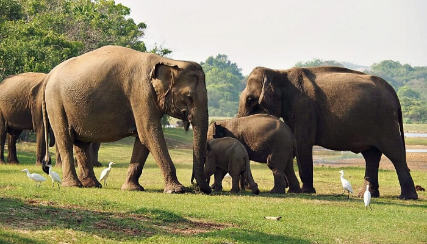
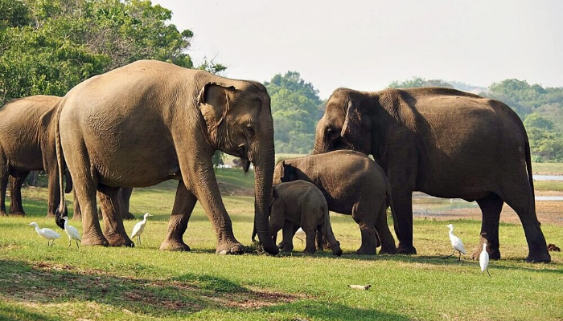
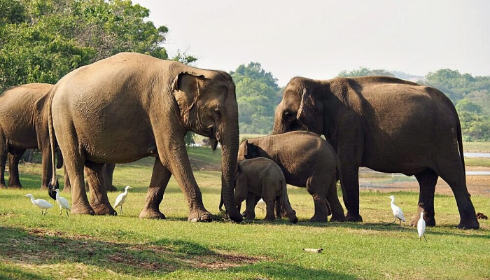

Yala National Park, located in the southeastern corner of Sri Lanka, is a mesmerizing haven for wildlife enthusiasts and nature lovers alike. Renowned for its diverse ecosystems and thriving biodiversity, Yala is the second-largest national park in the country, spanning over 979 square kilometers. The park is a sanctuary for a wide array of wildlife, including the elusive Sri Lankan leopard, elephants, sloth bears, and a myriad of bird species. The landscape is a picturesque blend of dense forests, grassy plains, and serene lagoons, providing a perfect setting for a safari adventure. Yala National Park's rich cultural heritage, with ancient rock inscriptions and historical ruins scattered throughout the area, adds an extra layer of fascination to this natural wonder. As you explore the park's untamed beauty, you'll undoubtedly be captivated by the symphony of sounds, vibrant colors, and the thrill of encountering majestic creatures in their natural habitat. Yala promises an unforgettable journey into the heart of Sri Lanka's wilderness, leaving visitors with memories of a lifetime.
Yala National Park boasts a spectacular tapestry of wildlife, making it a hotspot for nature enthusiasts and wildlife photographers. One of its most iconic residents is the Sri Lankan leopard, a majestic and elusive big cat that prowls through the dense foliage, adding an air of mystery to the park. Yala is also home to a thriving population of Asian elephants, their gentle giants ambling through the landscape. The park resonates with the trumpeting calls of these magnificent creatures and the playful antics of their adorable offspring. Additionally, Yala is a haven for bird watchers, with over 200 species of avian residents, including colorful peafowls, endemic Sri Lanka junglefowls, and a variety of waterbirds that grace the park's tranquil lagoons. Keep a keen eye out for the curious antics of the mischievous toque macaques and the languid movements of the sloth bears. The diverse ecosystems within Yala National Park create a harmonious balance, offering a glimpse into the wonders of the natural world.

Yala National Park not only captivates with its incredible wildlife but also offers a range of activities that immerse visitors in the beauty of the surroundings. Safari adventures take center stage, providing a thrilling opportunity to explore the vast expanse of the park and witness its diverse inhabitants in their natural habitat. Whether it's a morning safari with the golden hues of sunrise or an evening expedition bathed in the warm glow of the sunset, each journey promises a unique and awe-inspiring experience. The park also invites nature enthusiasts to engage in bird watching, where the vibrant plumage of numerous avian species becomes a spectacle against the lush backdrop. For those seeking a touch of history and culture, Yala unveils ancient rock inscriptions and archaeological wonders that whisper tales of times gone by. Camping under the star-studded sky within the designated camping sites offers a chance to connect intimately with the sounds of the wild. Yala National Park, with its array of activities, ensures that every moment is a discovery and an adventure in the heart of Sri Lanka's natural wonders.